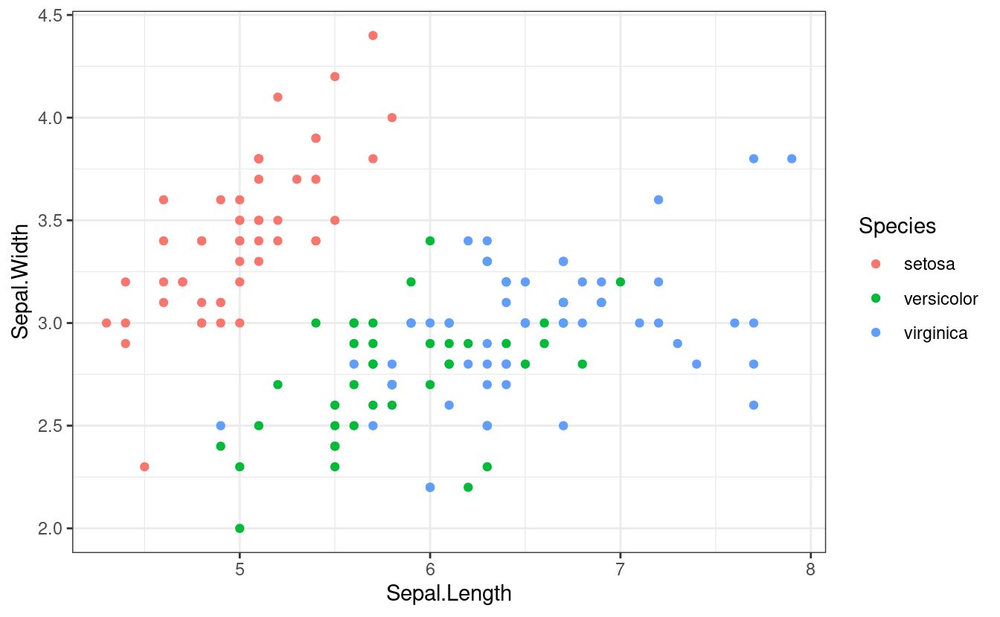

library(tidyverse)
library(knitr)
library(gt)
data_curr <- as_tibble(iris[1:30,])Exercise 10 - Quarto
Problem 1
YAML
This YAML was used for this document. Note this inclusion of some additional options such as df-print: paged and how bibliography: references.bib was generated after the citation inclusion. In addition, multi-rendering required rendering from the terminal in RStudio as the Render button only renders the first format option.
---
title: "Exercise 10 - Quarto"
author: "Chad Murchison"
format:
html:
df-print: paged
docx: default
pdf: default
knitr:
opts_chunk:
echo: false
bibliography: references.bib
execute:
cache: true
---Formatting
The following code will yield the formatting shown in figure 28.5 from R4DS as well as the citation for Literate Programming.
# Text formatting
*italic* **bold** [underline]{.underline} ~~strikeout~~ [small caps]{.smallcaps} `code` superscript^2^ and subscript~2~
# Headings
# 1st Level Header
## 2nd Level Header
### 3rd Level Header
# Lists
- Bulleted list item 1
- Item 2
- Item 2a
- Item 2b
1. Numberlist item 1
2. Item 2. The numbers are incremented automatically in the output.
# Links and images
<https://quarto.org>
[linked phrase](https://quarto.org)

[@knuth1984]
Problem 2
Iris data
Load the first 30 rows of Iris into a dedicated object with some simple table printing. The chunk option for #| tbl-cap: was used for captions.
# #| tbl-cap: "Standard printing"
data_currStandard printing
# #| tbl-cap: "Kable printing"
knitr::kable(data_curr)| Sepal.Length | Sepal.Width | Petal.Length | Petal.Width | Species |
|---|---|---|---|---|
| 5.1 | 3.5 | 1.4 | 0.2 | setosa |
| 4.9 | 3.0 | 1.4 | 0.2 | setosa |
| 4.7 | 3.2 | 1.3 | 0.2 | setosa |
| 4.6 | 3.1 | 1.5 | 0.2 | setosa |
| 5.0 | 3.6 | 1.4 | 0.2 | setosa |
| 5.4 | 3.9 | 1.7 | 0.4 | setosa |
| 4.6 | 3.4 | 1.4 | 0.3 | setosa |
| 5.0 | 3.4 | 1.5 | 0.2 | setosa |
| 4.4 | 2.9 | 1.4 | 0.2 | setosa |
| 4.9 | 3.1 | 1.5 | 0.1 | setosa |
| 5.4 | 3.7 | 1.5 | 0.2 | setosa |
| 4.8 | 3.4 | 1.6 | 0.2 | setosa |
| 4.8 | 3.0 | 1.4 | 0.1 | setosa |
| 4.3 | 3.0 | 1.1 | 0.1 | setosa |
| 5.8 | 4.0 | 1.2 | 0.2 | setosa |
| 5.7 | 4.4 | 1.5 | 0.4 | setosa |
| 5.4 | 3.9 | 1.3 | 0.4 | setosa |
| 5.1 | 3.5 | 1.4 | 0.3 | setosa |
| 5.7 | 3.8 | 1.7 | 0.3 | setosa |
| 5.1 | 3.8 | 1.5 | 0.3 | setosa |
| 5.4 | 3.4 | 1.7 | 0.2 | setosa |
| 5.1 | 3.7 | 1.5 | 0.4 | setosa |
| 4.6 | 3.6 | 1.0 | 0.2 | setosa |
| 5.1 | 3.3 | 1.7 | 0.5 | setosa |
| 4.8 | 3.4 | 1.9 | 0.2 | setosa |
| 5.0 | 3.0 | 1.6 | 0.2 | setosa |
| 5.0 | 3.4 | 1.6 | 0.4 | setosa |
| 5.2 | 3.5 | 1.5 | 0.2 | setosa |
| 5.2 | 3.4 | 1.4 | 0.2 | setosa |
| 4.7 | 3.2 | 1.6 | 0.2 | setosa |
# #| tbl-cap: "gt printing"
gt(data_curr)| Sepal.Length | Sepal.Width | Petal.Length | Petal.Width | Species |
|---|---|---|---|---|
| 5.1 | 3.5 | 1.4 | 0.2 | setosa |
| 4.9 | 3.0 | 1.4 | 0.2 | setosa |
| 4.7 | 3.2 | 1.3 | 0.2 | setosa |
| 4.6 | 3.1 | 1.5 | 0.2 | setosa |
| 5.0 | 3.6 | 1.4 | 0.2 | setosa |
| 5.4 | 3.9 | 1.7 | 0.4 | setosa |
| 4.6 | 3.4 | 1.4 | 0.3 | setosa |
| 5.0 | 3.4 | 1.5 | 0.2 | setosa |
| 4.4 | 2.9 | 1.4 | 0.2 | setosa |
| 4.9 | 3.1 | 1.5 | 0.1 | setosa |
| 5.4 | 3.7 | 1.5 | 0.2 | setosa |
| 4.8 | 3.4 | 1.6 | 0.2 | setosa |
| 4.8 | 3.0 | 1.4 | 0.1 | setosa |
| 4.3 | 3.0 | 1.1 | 0.1 | setosa |
| 5.8 | 4.0 | 1.2 | 0.2 | setosa |
| 5.7 | 4.4 | 1.5 | 0.4 | setosa |
| 5.4 | 3.9 | 1.3 | 0.4 | setosa |
| 5.1 | 3.5 | 1.4 | 0.3 | setosa |
| 5.7 | 3.8 | 1.7 | 0.3 | setosa |
| 5.1 | 3.8 | 1.5 | 0.3 | setosa |
| 5.4 | 3.4 | 1.7 | 0.2 | setosa |
| 5.1 | 3.7 | 1.5 | 0.4 | setosa |
| 4.6 | 3.6 | 1.0 | 0.2 | setosa |
| 5.1 | 3.3 | 1.7 | 0.5 | setosa |
| 4.8 | 3.4 | 1.9 | 0.2 | setosa |
| 5.0 | 3.0 | 1.6 | 0.2 | setosa |
| 5.0 | 3.4 | 1.6 | 0.4 | setosa |
| 5.2 | 3.5 | 1.5 | 0.2 | setosa |
| 5.2 | 3.4 | 1.4 | 0.2 | setosa |
| 4.7 | 3.2 | 1.6 | 0.2 | setosa |
Plots
A standard scatter plot:
# #| echo: true
# #| fig-cap: "Iris Sepal Length vs Width by Species"
# #| fig-height: 4
# #| fig-asp: 0.618
ggplot(iris, aes(x = Sepal.Length, y = Sepal.Width)) +
geom_point(aes(color = Species)) +
theme_bw()
A pair of histograms
# #| echo: true
# #| layout-ncol: 2
# #| fig-cap: "Histograms of Width (L) and Length (R) in Iris"
ggplot(iris, aes(x = Sepal.Width)) +
geom_histogram(aes(fill = Species), position = position_dodge(), bins = 30) +
theme_bw()
ggplot(iris, aes(x = Sepal.Length)) +
geom_histogram(aes(fill = Species), position = position_dodge(), bins = 30) +
theme_bw()Summary tables with kable() and gt()
table_out <- iris |>
group_by(Species) |>
summarise(Count = n(),
Mean_Length = mean(Sepal.Length),
Median_Length = median(Sepal.Length),
SD_Length = sd(Sepal.Length),
Mean_Width = mean(Sepal.Width),
Median_Width = median(Sepal.Width),
SD_Width = sd(Sepal.Width))
kable(table_out)| Species | Count | Mean_Length | Median_Length | SD_Length | Mean_Width | Median_Width | SD_Width |
|---|---|---|---|---|---|---|---|
| setosa | 50 | 5.006 | 5.0 | 0.3524897 | 3.428 | 3.4 | 0.3790644 |
| versicolor | 50 | 5.936 | 5.9 | 0.5161711 | 2.770 | 2.8 | 0.3137983 |
| virginica | 50 | 6.588 | 6.5 | 0.6358796 | 2.974 | 3.0 | 0.3224966 |
gt(table_out)| Species | Count | Mean_Length | Median_Length | SD_Length | Mean_Width | Median_Width | SD_Width |
|---|---|---|---|---|---|---|---|
| setosa | 50 | 5.006 | 5.0 | 0.3524897 | 3.428 | 3.4 | 0.3790644 |
| versicolor | 50 | 5.936 | 5.9 | 0.5161711 | 2.770 | 2.8 | 0.3137983 |
| virginica | 50 | 6.588 | 6.5 | 0.6358796 | 2.974 | 3.0 | 0.3224966 |